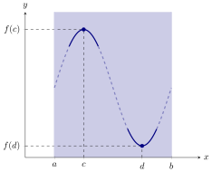

A function has an global maximum at , if for every in the domain of
the function.
(b)
A function has an global minimum at , if for every in the domain of
the function.
A global extremum is either a global maximum or a global minimum.
If we are working on an finite closed interval, then we have the following
theorem.
Extreme Value Theorem If is a continuous function for all in the closed interval ,
then there are points and in , such that is a global maximum and is a global
minimum on .
Below, we see a geometric interpretation of this theorem.

Would this theorem hold if we were working on an open interval?
yesno
Consider for . Does this function achieve its maximum and minimum?